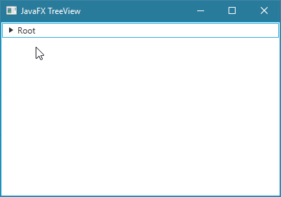
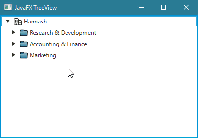
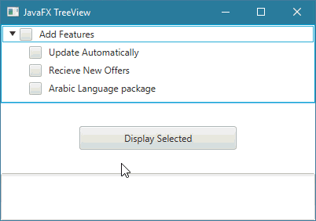

Javafxالكلاس TreeView
مقدمة
الكلاس TreeView يستخدم لإضافة قائمة شجرية ( Tree ) في واجهة المستخدم.
هذه القائمة تظهر ما بداخلها عند النقر عليه.
المقصود من كلمة شجرية هو أن كل كائن بداخلها يمكنه أيضاً إحتواء عدد غير محدد من الكائنات بداخله, و كل كائن يظهر ما بداخله عند النقر عليه.
مميزات الـ TreeView
يضيف Scroll Bar أفقي و عامودي بشكل تلقائي عند الحاجة.
إمكانية تعديل القيم مباشرةً عليه مع ضمان أن يكون نوع البيانات المدخل صحيح.
توفير أكثر من طريقة لتعديل القيم بشكل مباشر عليه.
لا يحتل مساحة كبيرة في النافذة, حيث أنه بإمكان المستخدم النقر على أي عنصر في القائمة ليرى ما بداخله و يمكنه أن ينقر عليه من جديد لإخفاء ما بداخله.
يمكن وضع أيقونات للعناصر.
بناء الكلاس TreeView
@DefaultProperty(value="root")
public class TreeView<T>
extends Control
طريقة التعامل معه
أول شيء عليك فعله هو إنشاء كائن من الكلاس TreeView لأنك بحاجة له لتحدد المكان الذي ستظهر فيه الـ Tree و لتحدد أيضاً نوع البيانات التي تريد تخزينها بداخله.
في الـ TreeView يمكنك إضافة العدد الذي تريده من الـ TreeItem أو الـ CheckBoxTreeItem.
لجعل أي TreeItem أو CheckBoxTreeItem في الـ TreeView قابل للتعديل يجب استدعاء الدالة setEditable() من كائن الـ TreeView و تمرير القيمة true لها.
بعدها يجب إستدعاء الدالة setCellFactory() و تمرير كائن لها يحدد كيف يمكن تعديل قيمة أي TreeItem أو CheckBoxTreeItem.
في حال أردت وضع أيقونة للـ TreeItem أو للـ CheckBoxTreeItem, يفضل أن يكون حجمها 16×16 بيكسل.
مصطلحات تقنية
| المصطلح |
معناه |
| Root Node |
تعني أعلا كائن يظهر في الـ Tree. |
| Parent Node |
تعني كائن يحتوي على كائن أو أكثر بداخله, و هو يظهرهم عند النقر عليه. |
| Leaf Node |
تعني كائن لا يحتوي على كائن بداخله. |
كونستركتورات الكلاس TreeView
الجدول التالي يحتوي على كونستركتورات الكلاس TreeView.
| الكونستركتور مع تعريفه |
public TreeView()
ينشئ كائن من الكلاس TreeView يمثل Tree فارغة. |
public TreeView(TreeItem<T> root)
ينشئ كائن من الكلاس TreeView يمثل Tree تحتوي على كائنات.
مكان الباراميتر root نضع كائن من إحدى الكلاسات التي تنفذ الإنترفيس TreeNode و الذي بدوره يمثل الـ Root Node للـ Tree. |
دوال الكلاس TreeView
الجدول التالي يحتوي على دوال الكلاس TreeView الأكثر إستخداماً.
| الدالة مع تعريفها |
public final void setTranslateX(double value)
تستخدم لتحديد مكان كائن الـ TreeView الذي قام باستدعائها أفقياً.
مكان الباراميتر value نضع رقم يمثل كم Pixel سيتم إزاحته من اليسار إلى اليمين. |
public final void setTranslateY(double value)
تستخدم لتحديد مكان كائن الـ TreeView الذي قام باستدعائها عامودياً.
مكان الباراميتر value نضع رقم يمثل كم Pixel سيتم إزاحته من الأعلى إلى الأسفل. |
public void setPrefSize(double prefWidth, double prefHeight)
تستخدم لتحديد حجم كائن الـ TreeView الذي قام باستدعائها.
|
public final void setDisable(boolean value)
تستخدم لجعل كائن الـ TreeView الذي قام باستدعائها يبدو غير مفعّل, أي يصبح لونه باهتاً و غير قابل للنقر عليه.
مكان الباراميتر value نضع القيمة true لجعله غير مفعّل. |
public final void setRoot(TreeItem<T> value)
تستخدم لتعيين أول عنصر في كائن الـ TreeView و الذي يقال له Item Root.
مكان الباراميتر value يمكنك تمرير كائن من الكلاس TreeItem أو من الكلاس CheckBoxTreeItem لأنه يرث منه. |
public final TreeItem<T> getRoot()
تستخدم للحصول على أول عنصر في كائن الـ TreeView و الذي يقال له Item Root.
الكائن الذي ترجعه يمكن عبارة عن كائن من الكلاس TreeItem أو من الكلاس CheckBoxTreeItem لأنه يرث منه. |
public final void setEditable(boolean value)
تستخدم لجعل المستخدم قادر على تحديث قيم كائن الـ TreeView الذي قام باستدعائها.
مكان الباراميتر value نضع القيمة true لجعله المستخدم قادر على تحديث القيم بداخله.
ملاحظة: تحتاج بعدها أيضاً إلى إستدعاء الدالة setCellFactory() من كائن الـ TreeView لتحدد كيف يستطيع المستخدم تحديث القيم. لا تقلق, شرحنا هذا بتفصيل في الأمثلة. |
public final void setStyle(String value)
تستخدم لتعديل تصميم كائن الـ TreeView الذي قام بإستدعائها.
مكان الباراميتر value يمكنك تمرير إسم و قيمة أي خاصية تريد تعديلها في كائن الـ TreeView بأسلوب لغة CSS لإظهاره بالشكل الذي تريده. |
أمثلة شاملة
المثال الأول
المثال التالي يعلمك طريقة إنشاء كائن من الكلاس TreeView و إضافته في النافذة.

شاهد المثال »
المثال الثاني
المثال التالي يعلمك طريقة وضع أيقونة للـ TreeView بالإضافة لجعله مفتوحاً بشكل إفتراضي عند تشغيل التطبيق.

شاهد المثال »
المثال الثالث
المثال التالي يعلمك طريقة جعل المستخدم قادر على إضافة و حذف و تعديل بيانات الـ TreeView بطريقة إحترافية.

شاهد المثال »
المثال الرابع
المثال التالي يعلمك طريقة إضافة CheckBoxTreeItem بداخل الـ TreeView.
بالإضافة إلى طريقة معرفة كل CheckBoxTreeItem تم تحديده بداخل الـ TreeView عند النقر على Button.

شاهد المثال »

 محرر الويب
محرر الويب نظام الألوان
نظام الألوان محول الوحدات
محول الوحدات محلل عناوين الشبكات
محلل عناوين الشبكات